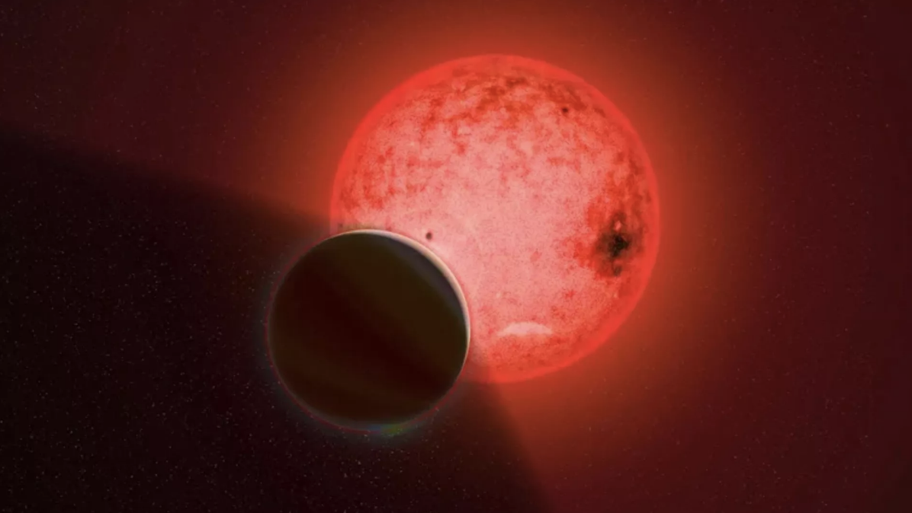
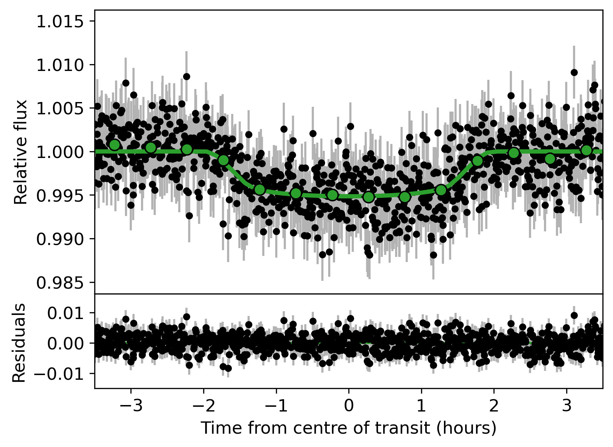
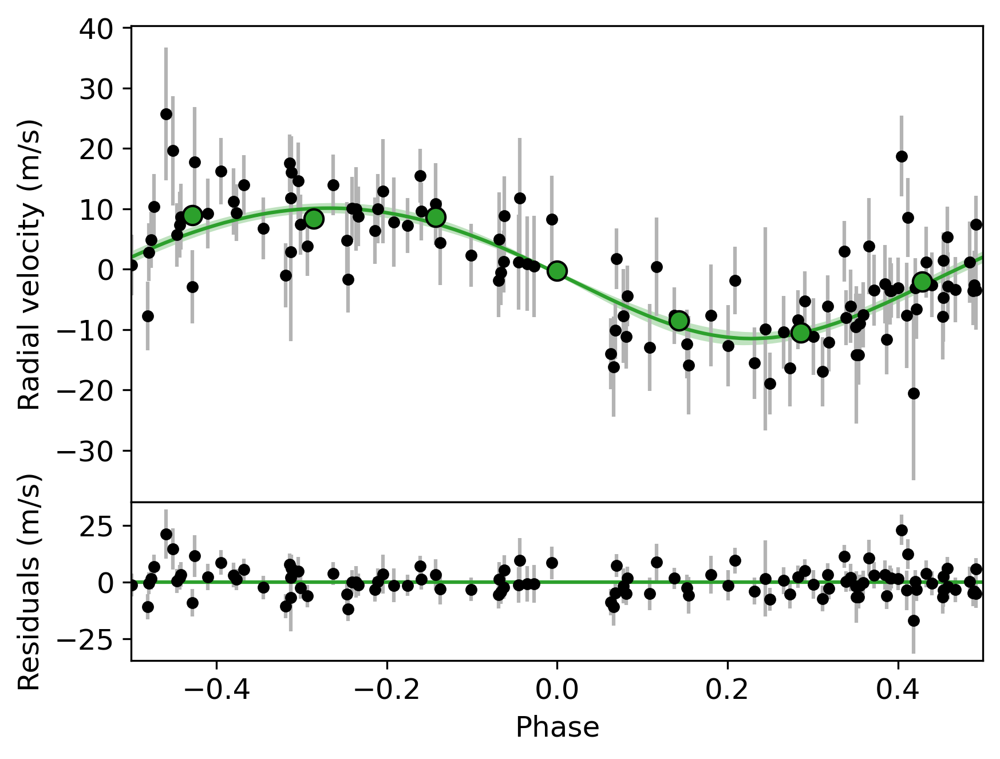
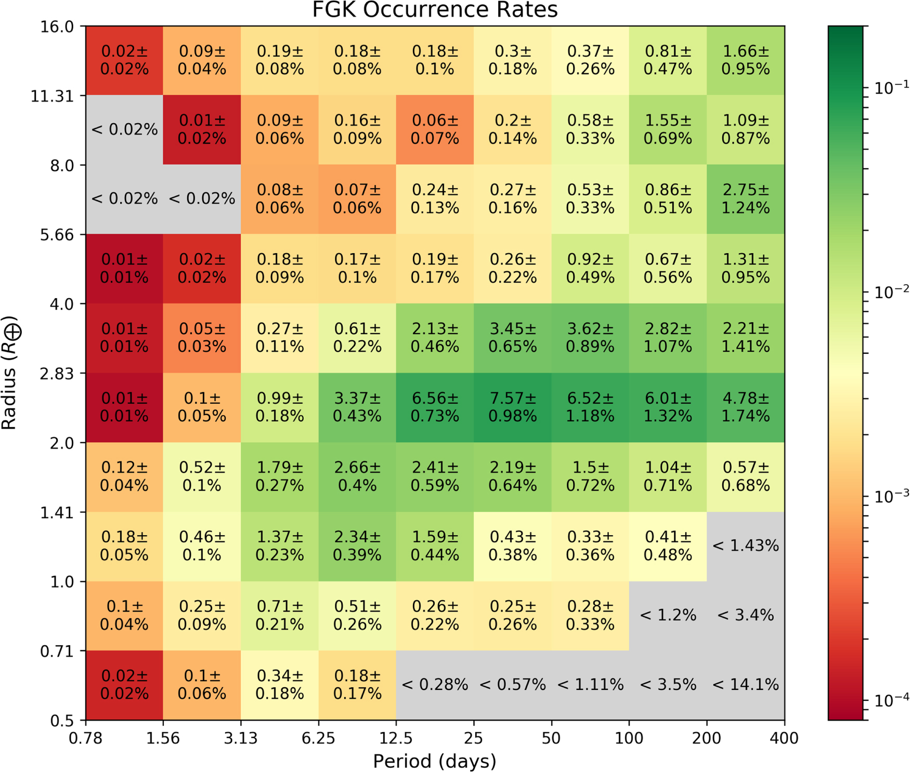
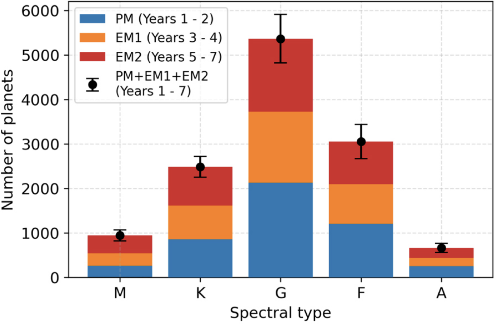

Research

Discovering New Exoplanets
Exoplanet surveys have found thousands of new planets and planet candidates, revealing exciting new classes of planets and enticing targets for further characterization. Finding large numbers of planets also enables population studies and studies of planetary system architectures, helping us place the Solar System in context.
I use the transit method to find new planets in datasets such as those from NASA's Kepler and TESS missions. One of my planet search efforts is the ongoing TESS Faint Star Search, through which I have identified thousands of TESS Objects of Interest (TOIs). Among the Faint Star TOIs already confirmed are new multiplanet systems and planets that challenge theories of planet formation and evolution, such as giant exoplanets orbiting low-mass stars and planets in the nearly-empty hot Neptune desert. As of June 2023, the Faint Star Search has identified 3003 TOIs (45% of all TOIs), including 34 confirmed planets!
Image credit: Katharine Cain/Carnegie Institution for Science
Highlighted Works:
- Kunimoto et al. (2022a) - The original TESS Faint Star Search paper
- Kunimoto et al. (2018), Kunimoto et al. (2020) - Independent searches for new planets in Kepler data
Automated Vetting of Planet Candidates
The vast majority of possible candidates from standard planet searches are either false positives (e.g. on- and off-target eclipsing binaries) or false alarms (e.g. instrumental systematics and stellar variability). Because manually reviewing candidates is time-intensive, automated vetting is needed for large-scale planet searches. Automated vetting is also uniform and reproducible, which is needed for statistically robust demographic studies.
I have worked on both machine learning classifiers and decision trees designed to mimic the manual process for rejecting false positives and false alarms in transit survey data. One of my codebases, called LEO (for Lazy Exoplanet Operations), is available on Github.
Highlighted Works:
- Tey [+Kunimoto] et al. (2022) - A machine learning classifier for TESS planet vetting

Exoplanet Characterization
Exoplanet characterization gives us a better understanding of a planet's radius, mass, mean density, atmospheric composition, formation and evolution scenarios, and dynamical history. My characterization work includes exoplanet mass measurements via radial velocity observations and atmospheric characterization via transmission spectroscopy.
Image credit: Kunimoto et al. (2023)
Highlighted Works:
- Kunimoto et al. (2023) - TOI-4010: the first known close-in multiplanet system with a planet in the hot Neptune desert, and the first system with at least three planets larger than 3 R⊕ with periods less than 15 days
- Luque [+Kunimoto] et al. (2022) - TOI-4599: at only 10pc, one of the closest systems with multiple transiting planets

Exoplanet Demographics and Occurrence Rates
Exoplanet demographic studies have revolutionized our understanding of planetary systems and their formation mechanisms by characterizing exoplanets at the population level. By determining the frequency and distributions of planets as a function of planetary parameters (e.g. radius, mass, orbital elements) and host star properties (e.g. age, mass, metallicity), demographic studies reveal the imprints of physical processes involved in shaping planetary systems and provide the ground-truth dataset needed to test theories of planet formation and evolution.
I use data from transit and radial velocity surveys to explore exoplanet demographics across a wide variety of planets and host stars. I also develop new statistical frameworks to innovate how we compute exoplanet occurrence rates, such as those that integrate over multiple detection methods to provide an unprecedented view of the underlying planet population.
Image credit: Kunimoto & Matthews (2020)
Highlighted Works:
- Beleznay & Kunimoto (2022) (student led) - Exploring a dependence in hot Jupiter abundance by stellar mass across AFG stars with TESS
- Kunimoto et al. (2021) - A new statistical framework for combining transit and radial velocity surveys for demographics
- Kunimoto & Matthews (2020) - Demographics across a wide variety of planet radii, periods, and F, G, and K host star types based on an independent search of Kepler data
The Abundance of Potentially Habitable, Earth-like Exoplanets
Finding and characterizing potentially habitable planets like the Earth is one of the fundamental goals of astronomy, and is one of the aims of the future Habitable Worlds Observatory (HWO) proposed by the Astro2020 Decadal Survey. Key to the design and success of the HWO and other missions to detect and characterize exo-Earths is an understanding of their abundance, also known as "eta-Earth." I use the Kepler dataset to improve estimates of eta-Earth and better understand the sensitivity of such estimates to various assumptions, such as occurrence rate methodology, extrapolation technique, and habitable zone definition.
Image credit: NASA Kepler Mission/Dana Berry
Highlighted Works:
- Bryson [+Kunimoto] et al. (2021) - The Kepler team's final, most statistically robust estimate of eta-Earth
- Kunimoto & Matthews (2020) - An estimate for eta-Earth for GK-type stars using an independent planet search/vetting process applied to Kepler data

Exoplanet Survey Yield Predictions
Predictions of exoplanet survey yields help the planning of follow-up observations and enable explorations of the consequences of various mission design choices. Predictions also manage the expectations of the scientific community and the public. I designed simulations of millions of planetary systems and their detectability with TESS over 7 years of observations, the results of which were highlighted in the successful TESS Senior Review proposal for a second Extended Mission.
Image credit: Kunimoto et al. (2022b)
Highlighted Works:
- Kunimoto et al. (2022b) - Using Kepler exoplanet occurrence rates to predict the future TESS exoplanet yield